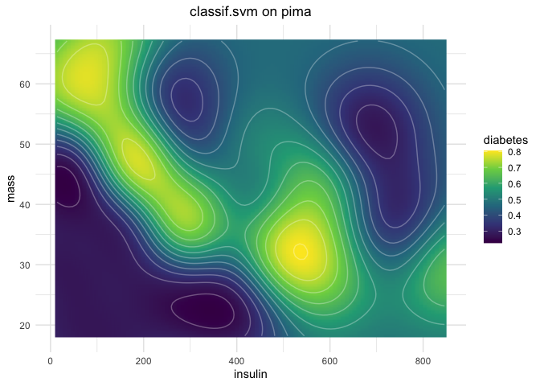
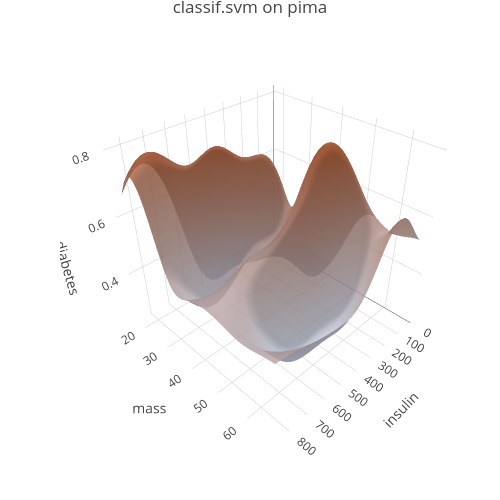

The goal of vistool is to visualize optimization traces and aid in teaching optimization-related concepts.
Installation
You can install the development version of vistool from GitHub with:
# install.packages("pak")
pak::pak("slds-lmu/vistool")Please note that surface visualization features (plotly backend) rely on plotly which in turn relies on certain functionality provided by Python packages, accessed via reticulate.
Optional: Setup for Saving Plotly Plots
The $save() functionality for surface plots uses plotly::save_image() internally, which in turn relies on the Python package kaleido.
vistool (via reticulate >= 1.41) declares this requirement on load using py_require("kaleido"). The first time Python is needed, an ephemeral, cached Python environment is provisioned automatically with kaleido—no manual Miniconda setup required for typical users.
If you prefer to manage Python yourself, ensure kaleido is installed in the Python environment that reticulate uses. Example:
install.packages("reticulate")
# OPTIONAL: point reticulate to a specific python before loading vistool
# Sys.setenv(RETICULATE_PYTHON = "/path/to/python")
reticulate::py_install("kaleido")Example
This example shows how to visualize the prediction surface of an SVM on the pima task included in mlr3:
# Create an example task, add missing data imputation and select 2 features
task = tsk("pima")
task = po("imputemean")$train(list(task))[[1]]
task$select(c("insulin", "mass"))
# Select example learner
learner = lrn("classif.svm", predict_type = "prob")
# Create 2D ggplot2 visualization
vis_2d = as_visualizer(task, learner = learner)
vis_2d$plot()
For interactive exploration, you can create surface visualizations with plotly:
# Create surface visualization for interactive plotly surface plot
vis_surface = as_visualizer(task, learner = learner, type = "surface")
# Define a 3D scene
vis_surface$set_scene(x = 1.4, y = 1.4, z = 1.4)
# View interactively
vis_surface$plot()
Save static version as png:
# only works if Python kaleido package is installed
# see installation instructions above for setting up plotly save functionality
vis_surface$save("man/figures/demo_1.png", width = 500, height = 500)Contributing
For anyone interested in contributing to vistool, please see the Developer Reference.